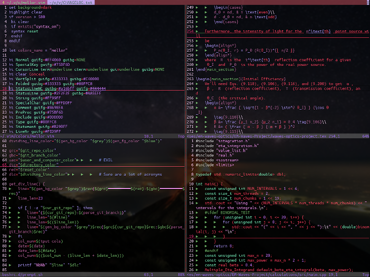

Here are two basic tools for designing color schemes by using the HSL (Hue, Saturation, and Lightness) colorspace. I won't be able to explain too much right now, but the first box interpolates between two colors, meaning if you have a red and a blue that you like, the first box will display colors that are a mix of both. The second tool extrapolates across colors, meaning if you have two colors and one is too similar to the other (e.g. dark blue text on a dark purple background), you can generate colors that are more different from each otheri without completely changing your color scheme.
The boxes below will display the colors along with the hex code for that color if you mouse over the white dot.
As an example, here are all the different color combinations of colored text on an End Color background.
As you might notice, the closer two colors are together, the harder they are to read, which is partly where color extrapolation can be useful. For example, I frequently used color extrapolation in designing my own color scheme for my text editor, as you can see below:
Click the image for a higher resolution. On Firefox and Chrome, one click on the image once you've opened it in a separate tab should get it to an optimal zoom level. If you want another example, here's a figure I made for a project in one of my classes.
The sky being blue, the LED being a yellow-green, and the two sets of arrows being a shade of red and a shade of purple can just come from some basic color theory, but the specific shades were determined using this web app.
Of course, just as a paint brush is useless without a painter, this web app is useless without an understanding of color spaces, especially the extrapolation part. For example, if you pick two similar colors, your extrapolation won't go anywhere because the app will think you want something that's just slightly different from the other color. If you pick two wildly different colors, the extrapolation will end up hitting a boundary (saturation and lightness) or just loop back around. If you use a light color and a dark color, you may end up with the extrapolated color going to black or white too quickly, so you'll have to decrease the difference between the lightness or value (they are just different scales of brightness since humans see different colors with different perceived brightnesses). If you use colors with way different saturations, then you'll end up with either a grey or too much color.
In order to make things easier on you, I added a little bit of code to fix the hue if the colors get too close to white, black, or grey because these colors end up having a hue of zero, which happens to be red. If you were to use a blue color, instead of just getting shades of blue, you would get shades of red, purple, and blue.

{kind=link}
{kind=link}